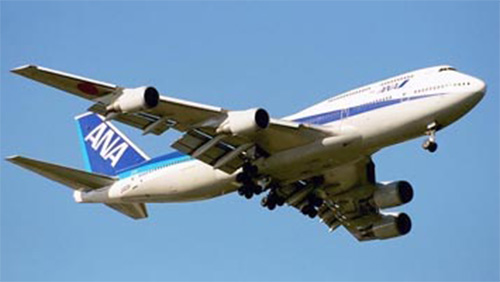

Boeing 747-400 Domestic

- Разработчик: Boeing
- Страна: США
- Первый полет: 1988
- Тип: Ближнемагистральный пассажирский самолет
Boeing Model 747-400 Domestic - ближнемагистральный пассажирский самолет, разработанный американской фирмой Boeing. Boeing 747-400 Domestic - модификация модели 747-400 с повышенной пасажировместимостью - 568 пассажиров в трехклассной конфигурации. На Boeing 747-400 Domestic , как и на некоторых других моделях, штатно устанавливаются Цифровой компьютер СВС (DADC),
Система самонаблюдения (FMS) и Инерциальная навигационная система (IRS) фирмы Honeywell одного из мировых лидеров в этой области. Самолет оборудован турбовентиляторными двигателями General Electric CF6-80C2B1F тягой 20294 кгс или Pratt & Whitney PW4062 тягой 20612 кгс. Так же на самолете применены специальные технологии позволяющие сокращать взлетную и посадочную дистанцию. Самолет был впервые показан в 1988 году.
| Летно технические характеристики | |
|---|---|
| Модификация | Boeing 747-400 Domestic |
| Размах крыла максимальный, м | 59.60 |
| Длина, м | 70.60 |
| Высота, м | 19.40 |
| Площадь крыла, м2 | 560.00 |
| Масса, кг | |
| - пустого самолета | 174400 |
| - нормальная взлетная | 378182 |
| Тип двигателя | 4 ТРДД General Electric CF6-80C2B1F (Pratt Whitney PW4062) |
| Мощность, кгс. | 4 х 20294 (20612) |
| крейсерская скорость, км/ч | 910 |
| Практическая дальность с 1300 кг груза, км | 2905 |
| Практический потолок, м | |
| Экипаж, чел | 2 |
| Полезная нагрузка: | 568 пассажиров в 2-х классной конфигурации |